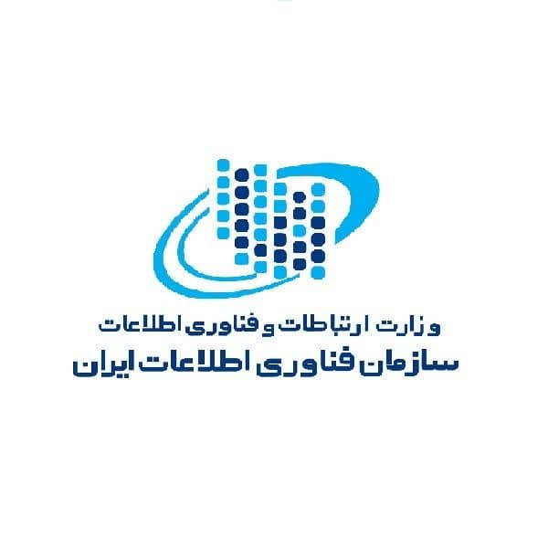

  <html dir="rtl"></html>
    <head>
      <title>harim khososy </title>
      <meta charset="utf-8"/>
    </head>
    <body>
     
      <p>       </p>
      
    
     <fieldset>
      <h3> <a href="dargah.html">بازگشت به صفحه ورود</a></h3>
      <p align="left">
      </p> <center><h2>بسمه تعالی</h2></center>
      
  <h2>  بيانيه حريم خصوصی  </h2>
  <h4>طلاعات مربوط به هر شخص، حریم خصوصی وی محسوب می‌شود. حفاظت و حراست از اطلاعات شخصی شهروندان در پنجره ملی خدمات دولت هوشمند، نه تنها موجب حفظ امنیت کاربران می‌شود، بلکه باعث اعتماد بیشتر و مشارکت آنها در فعالیت‌های جاری می‌گردد. هدف از این بیانیه، آگاه ساختن شما درباره ی نوع و نحوه ی استفاده از اطلاعاتی است که در هنگام استفاده از  پنجره ملی خدمات دولت هوشمند، از جانب شما دریافت می‌گردد. سازمان فناوری اطلاعات ایران خود را ملزم به رعایت حریم خصوصی همه  شهروندان و کاربران سامانه دانسته و آن دسته از اطلاعات کاربران را که فقط به منظور ارائه خدمات کفایت می‌کند، دریافت کرده و از انتشار آن یا در اختیار قرار دادن آن به دیگران خودداری مینماید. اطلاعات جمع آوری شده از بازدیدکنندگان در بخش نظرسنجی کارکنان دولت و سازمان ها، صرفا ً برای بهبود کیفیت خدمات و محتوای تارنما مورد استفاده قرار می‌گیرند.</h4>
  <h2>چگونگی جمع آوری و استفاده از اطلاعات کاربران:</h2>
    <h4>الف: اطلاعاتی که شما خود در اختيار این سازمان قرار می‌دهيد، شامل موارد زيرهستند:

      در درگاه پنجره ملی خدمات دولت هوشمند، اقلام اطلاعاتی شامل شماره تلفن همراه، تاریخ تولد، کد پستی و کد ملی کاربران را دریافت مینماییم که از این اقلام، صرفا جهت احراز هویت کاربران استفاده خواهد شد.
      
      ب: برخی اطلاعات ديگر که به صورت خودکار از شما دريافت میشود شامل موارد زير می‌باشد:</h4>
      <h4>
      <ul>
        <li>دستگاهی که از طریق آن درگاه سازمان فناوری اطلاعات ایران را مشاهده می‌نمایید( تلفن همراه ، تبلت ، رایانه).</li>
        <li>نام و نسخه سیستم عامل وbrowser کامپیوتر شما.</li>
        <li>اطلاعات صفحات بازدید شده.</li>
        <li>تعداد بازدیدهای روزانه در درگاه.</li>
        <li>هدف ما از دریافت این اطلاعات استفاده از آنها در تحلیل عملکرد کاربران درگاه می باشد تا بتوانیم در خدمت رسانی بهتر عمل کنیم.</li>
      </ul>
    </h4>
    <h2>امنیت اطلاعات</h2>
    <h4>متعهدیم که امنیت اطلاعات شما را تضمین نماییم و برای جلوگیری از هر نوع دسترسی غیرمجاز و افشای اطلاعات شما از همه شیوه‌‌های لازم استفاده می‌کنیم تا امنیت اطلاعاتی را که به صورت آنلاین گردآوری می‌کنیم، حفظ شود. لازم به ذکر است در سامانه ما، ممکن است به سایت های دیگری لینک شوید، وقتی که شما از طریق این لینک‌ها از سامانه ما خارج می‌شوید، توجه داشته باشید که ما بر دیگر سایت ها کنترل نداریم و سازمان تعهدی بر حفظ حریم شخصی آنان در سایت مقصد نخواهد داشت و مراجعه کنندگان  میبایست به بیانیه حریم شخصی آن سایت ها مراجعه نمایند.</h4>
    <h2>تغييرات در بيانيه سياست حفظ محرمانگی </h2>
    <h4>ما این حق را برای خود محفوظ می‌دانیم که در هر زمانی این بیانیه را ویرایش نموده و تغییرات خود را اعمال نماییم. در این شرایط شما موظف هستید که آخرین تغییرات ما را در بیانیه از طریق سامانه مشاهده نموده و از آن مطلع شوید. </h4>
  </fieldset>
    </body>
</html>